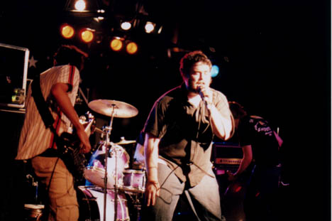
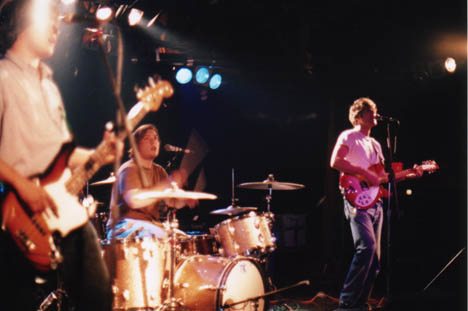
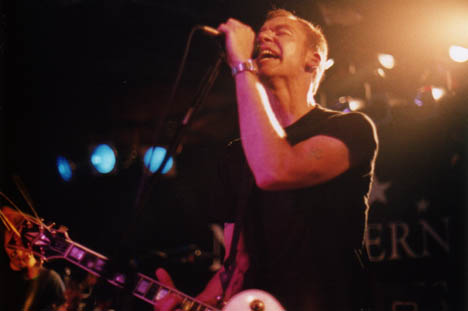
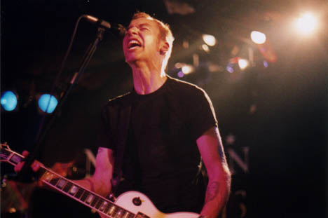
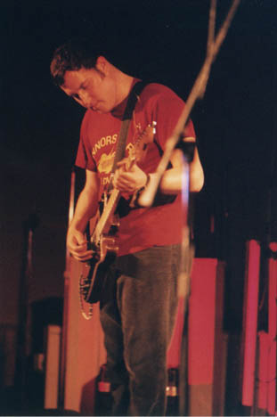
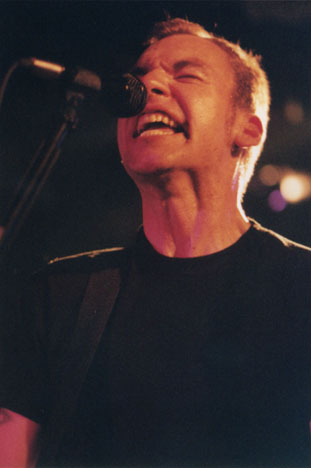
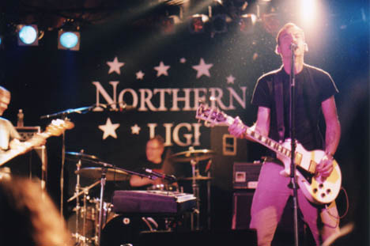
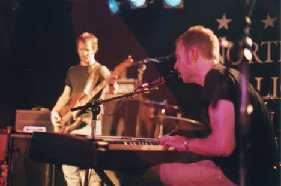
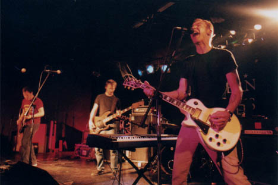

Big Orange Crayonmusical thingsFairweather, Love Scene, and Jets to Brazil Northern Lights, Clifton Park, NY May 24th, 2001 Pictures at the bottom! I waited a very long time for Jets to Brazil to do a show somewhere that I could watch it. I kind of lost a bit of interest when Four Cornered Night came out - I didn't think that it was nearly as exciting as Orange Rhyming Dictionary and kind of thought that the combination of the piano and slower songs made Blake Schwarzenbach sound like Rowlf from the Muppets. Still, I was happy to have a chance to see them, even if it was at my least favorite club in the universe. Ok, so nothing happened to make me as mad at Northern Lights as I normally am, so I don't really have anything negative to say about them other than that the place still feels like a Pondarosa and I just have a general problem with clubs that have giant posters up proclaiming that Budweiser is their official beer... Whatever, though. Fairweather was the first band to play - I kind of liked them. They were emo in the early Promise Ring kind of way, I guess. I use that description too much, but I'm too lazy to think of anything creative to say about an emo band that sounds pretty much like every other no-too-bad emo band. So yeah, they were decent. Love Scene played next and I liked them better. They were more straightforward indie rock, if there is such a thing. I would have bought something from them, but I only had two dollars left in my wallet after paying to get in, and I don't think they were selling anything anyway. They were good, though. When Jets to Brazil came on, I realized something - I didn't hate Four Cornered Night as much as I wanted to hate it. I mean, I was kind of bored with it after a few listens, but I would have enjoyed listening to it if I hadn't been biased by the fact that I was expecting it to be more like Orange Rhyming Dictionary. I actually found myself enjoying the newer songs when Jets to Brazil played them, and I didn't feel like I was being put to sleep or watching a band past its prime. They did an exciting and intense show. When they talked to the crowd it seemed a bit uncomfortable and weird (the badly timed jokes they got back didn't help, either) but I think I can safely blame that on Northern Lights. Still, when I left, I felt a lot better about Jets to Brazil, which is a weird thing to say, but I really loved their first album, and maybe with time I can appreciate their newer stuff, too. I had fun anyway. Pictures: Fairweather:  Love Scene:  Jets to Brazil:       "Can't live with 'em, can't live without 'em..." I kid. If anyone can tell me what the heck that orange, crescent-shaped splotch on this picture is, I'd be happy to find out...  yada yada yada: Nikkormat FTN, Fuji Superia 1600, 24mm f/2.8, 50mm f/1.4, 105mm f/2.5 Nikkors. Shutter speeds from 1/15 to 1/60. Yay. Please don't post these elsewhere unless you're in one of the bands or are a nice person. |